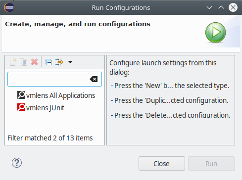
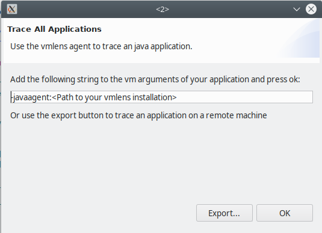
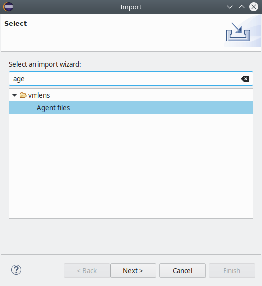
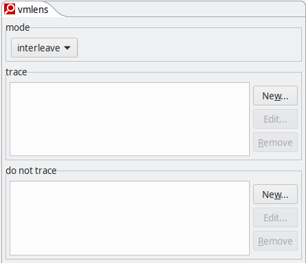
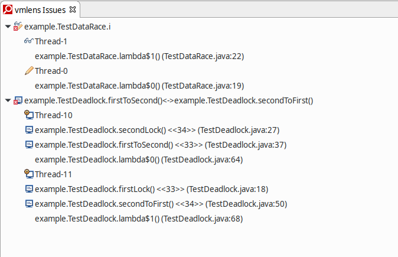
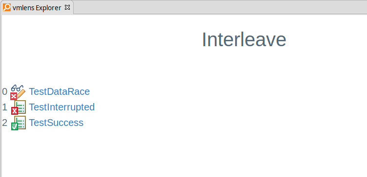
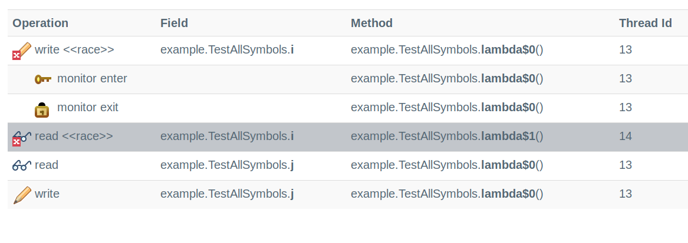
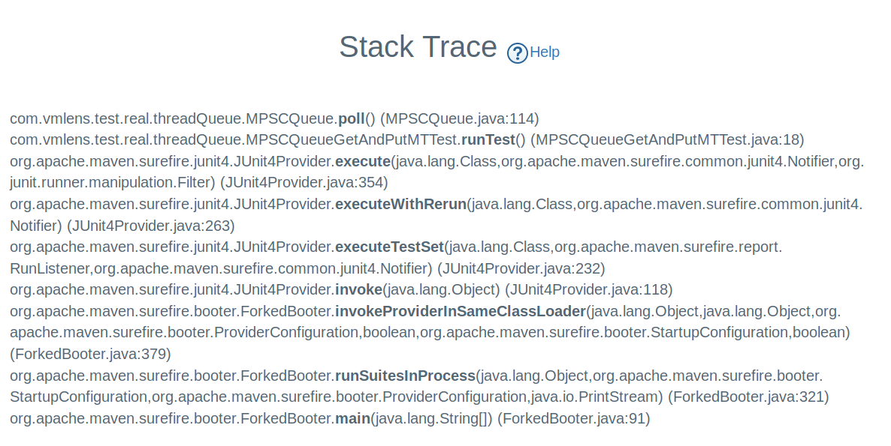

The vmlens eclipse plugin
Install
Install from marketplace:
- Start Eclipse (version 4.4 or greater)
-

Or install directly from update site:
- Start Eclipse
- Select Help>Install New Software…
- Work with: https://vmlens.com/download/site/
To use the class AllInterleavings you need to include the jar api-1.0.15.jar into your classpath. You can download this jar from maven central here.
Running JUnit tests
To run a unit test use the junit vmlens shortcut:

The vmlens configuration for JUnit runs is described here
Running all other types of application
To run vmlens with another type of application, create a "vmlens All Applications" run configuration. Select Run -> Run Configurations... from the main menu. And create a "vmlens All Applications" run configuration:

After pressing run vmlens shows you the following dialog:

To run vmlens with an application on your local machine either inside or outside of eclipse add the vmlens agent string to the VM arguments of your application. To run on a remote machine export the agent files to a folder by pressing the export button.
Running on a remote machine
Copy this folder to your remote machine and configure your application with an agent string pointing to the agent.jar in this folder:
-javaagent:<Path of agent.jar>/agent.jar
When you start your application the vmlens agent creates a folder vmlens in the working directory of your application. After you stopped your application the agent stops and you can import the folder vmlens in eclipse: Select File -> Import... from the main menu and select the vmlens Agent files wizard as shown below:

Now vmlens will analyze the execution trace of your application and open the vmlens perspective in eclipse showing you the results.
Please set the java heap size for eclipse in the eclipse.ini to a high enough value, for example -Xmx5g
Changing the path of the vmlens folder
In the default configuration, the agent writes the execution trace in a folder called vmlens in the working directory of your application. To change this path, change the property eventDir in the file called run.properties in the folder which contains the agent.jar file. In the default configuration, this property is set to ./vmlens/
eventDir=./vmlens/
Launch Configuration

In the run configuration you can configure the following properties:
trace
Trace let you narrow the methods which get traced. If trace is configured vmlens will only search for data races inside methods matching the trace elements. Also when showing the stack trace where the data race was found vmlens will start at the first method matching a trace element.
do not trace
vmlens does not trace when inside a method which matches a pattern in this list.
exclude from stacktrace
Methods matching the given pattern will not be shown in stack traces, for example in the stack trace for a deadlock or data race.
suppress
A data race name matching this pattern, will not be shown in the issue view.
Pattern matching guide
vmlens supports the ant directory pattern for method names. So you can use the following wild cards:
- * Matches zero or more characters (not including the path separator .)
- ** Matches zero or more path segments.
- ? Matches one character (any character except the path separator .)
Examples:
- com.vmlens.** Matches all methods from classes in the package and sub-packages from com.vmlens
- com.vmlens.test.TestAllRaces.* Matches all methods in the class com.vmlens.test.TestAllRaces
The views
The issues view
The issue report shows you all data races and deadlocks. Open the view you by going to Window -> Show View -> Other... -> vmlens -> vmlens Issues.

The example report shows one data race, the symbol  and one deadlock, the symbol
and one deadlock, the symbol  .
.
For the data race the view shows you the stack trace and thread name of the reading thread, the symbol and for the writing thread, the symbol  .
.
For the deadlock the view shows you the thread names of the two threads in the deadlock, the symbol  ,and the stack trace. The position in the stack trace in which a monitor was acquired is marked with the symbol
,and the stack trace. The position in the stack trace in which a monitor was acquired is marked with the symbol  .
.
The interleave view
The interleave report shows you the thread interleavings which led to an assertion error or to a data race. Open the view you by going to Window -> Show View -> Other... -> vmlens -> vmlens Explorer.

The above example report shows you the three potential outcomes of the interleave loop:
- A successful loop, the symbol

- An interrupted loop, the symbol

- And a loop containing a data race, the symbol .
By clicking on the successful interleave loop you see the last thread interleaving of this loop. By clicking on the interrupted loop you see the thread interleaving which led to the interrupt. And by clicking on the loop with a data race you see the thread interleaving which led to the data race.
The interleave detail report

The interleave detail report shows you one thread interleaving of an interleave loop. The report shows you all synchronization actions and data races in the order of occurrence. In the above example, first, a thread with thread id 13 wrote to the variable i which led to data race. After that, the same thread entered a synchronized block, and so on. The following symbols are used in this report:
The following symbols are used in this report:
-
 A write which led to a data race
A write which led to a data race
-
 A read which led to a data race
A read which led to a data race
-
A write to a volatile field
- A read to a volatile field
-
 A monitor or lock enter
A monitor or lock enter
-
 A monitor or lock exit
A monitor or lock exit
The stack trace report
The stack trace report shows the stack trace of a method call:
